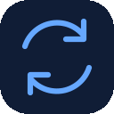
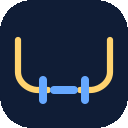
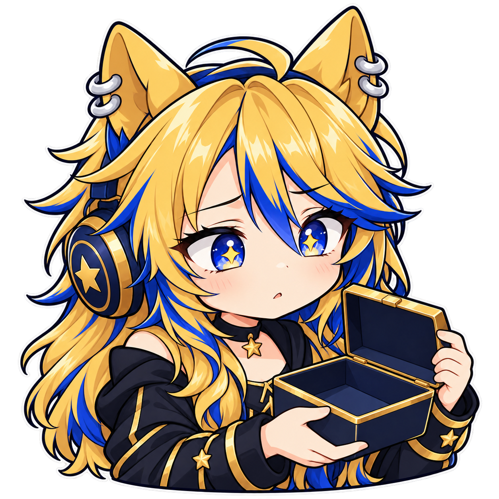
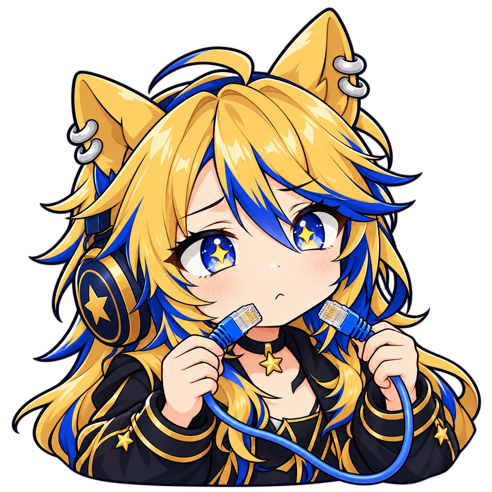

Registro activo
motion.log-recordingTres escenas y seis GIF. Catálogo vigente de iconos de eventos
motion.log-recording
motion.syncmotion.security-scanmotion.upload
motion.reconnectmotion.attention
scene.vacio
scene.sin-conexionscene.revision-seguridad